Benjamin Jäger
Slides first developed by Mine Çetinkaya-Rundel. Derivative of OpenIntro slides, shared under a CC BY-SA licence.
B.Rosen and T. Jerdee (1974), “Influence of sex role stereotypes on personnel decisions”, J.Applied Psychology, 59:9-14.
| Promotion | ||||
| Promoted | Not Promoted | Total | ||
| Gender | Male | 21 | 3 | 24 |
| Female | 14 | 10 | 24 | |
| Total | 35 | 13 | 48 | |
% of males promoted: \(21 / 24 = 0.875\)
% of females promoted: \(14 / 24 = 0.583\)
We will learn the tools to decide. How?
Mathematics / Statistics can describe due to chance.
Deale et. al. Cognitive behavior therapy for chronic fatigue syndrome: A randomized controlled trial. The American Journal of Psychiatry 154.3 (1997).
Patients randomly assigned to treatment and control groups, 30 patients in each group:
The table below shows the distribution of patients with good outcomes at 6-month follow-up. Note that 7 patients dropped out of the study: 3 from the treatment and 4 from the control group.
| Good outcome | ||||
| Yes | No | Total | ||
| Treatment | 19 | 8 | 27 | |
| Group | Control | 5 | 21 | 26 |
| Total | 24 | 29 | 53 | |
Do the data show a “real” difference between the groups?
Are the results of this study generalizable to all patients with chronic fatigue syndrome?
These patients had specific characteristics and volunteered to be a part of this study, therefore they may not be representative of all patients with chronic fatigue syndrome. While we cannot immediately generalize the results to all patients, this first study is encouraging. The method works for patients with some narrow set of characteristics, and that gives hope that it will work, at least to some degree, with other patients.
A survey was conducted on students in an introductory statistics course. Below are a few of the questions on the survey, and the corresponding variables the data from the responses were stored in:
gender: What is your gender?intro_extra: Do you consider yourself introverted or extraverted?sleep: How many hours do you sleep at night, on average?bedtime: What time do you usually go to bed?countries: How many countries have you visited?dread: On a scale of 1-5, how much do you dread being here?Data collected on students in a statistics class on a variety of variables:
| variable | |||||
| \(\downarrow\) | |||||
| Stu. | gender |
intro_extra |
\(\cdots\) | dread |
|
| 1 | male | extravert | \(\cdots\) | 3 | |
| 2 | female | extravert | \(\cdots\) | 2 | |
| 3 | female | introvert | \(\cdots\) | 4 | \(\leftarrow\) |
| 4 | female | extravert | \(\cdots\) | 2 | observation |
| \(\vdots\) | \(\vdots\) | \(\vdots\) | \(\vdots\) | \(\vdots\) | |
| 86 | male | extravert | \(\cdots\) | 3 |
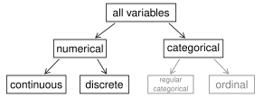
gender |
sleep |
bedtime |
countries |
dread |
|
|---|---|---|---|---|---|
| 1 | male | 5 | 12-2 | 13 | 3 |
| 2 | female | 7 | 10-12 | 7 | 2 |
| 3 | female | 5.5 | 12-2 | 1 | 4 |
| 4 | female | 7 | 12-2 | 2 | |
| 5 | female | 3 | 12-2 | 1 | 3 |
| 6 | female | 3 | 12-2 | 9 | 4 |
gender: categoricalsleep: numerical, continuousbedtime: categorical, ordinalcountries: numerical, discretedread: categorical, ordinal - could also be used as numericalWhat type of variable is a telephone country code (e.g. +45)?
Does there appear to be a relationship between GPA and number of hours students study per week?
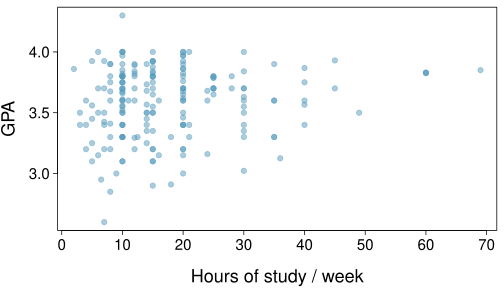
Can you spot anything unusual about any of the data points?
There is one student with GPA \(>\) 4.0, this is likely a data error.
To identify the explanatory variable in a pair of variables, identify which of the two is suspected of affecting the other:
explanatory variable \(\xrightarrow{might~affect}\)response variable
Labeling variables as explanatory and response does not guarantee the relationship between the two is actually causal, even if there is an association identified between the two variables. We use these labels only to keep track of which variable we suspect affects the other.
Observational studies: Collect data in a way that does not directly interfere with how the data arise (e.g. surveys).
Experiment: Researchers randomly assign subjects to various treatments in order to establish causal connections between the explanatory and response variables.
When two variables show some connection with one another, they are called associated variables.
If two variables are not associated, i.e. there is no evident connection between the two, then they are said to be independent.
In general, association does not imply causation, and causation can only be inferred from a randomized experiment.
Based on the scatterplot on the right, which of the following statements is correct about the head and skull lengths of possums?
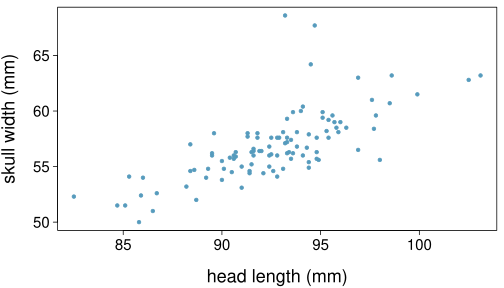
[Participate ⟹ strawpoll.live and use the code 833295]
Research question: Can people become better, more efficient runners on their own, merely by running?
Population of interest: All people Sample: Group of adult women who recently joined a running group
Population to which results can be generalized: Adult women, if the data are randomly sampled
Brandt, The Cigarette Century (2009), Basic Books.
Wouldn’t it bes better to just include everyone and “sample” the entire population?
There are problems with taking a census:
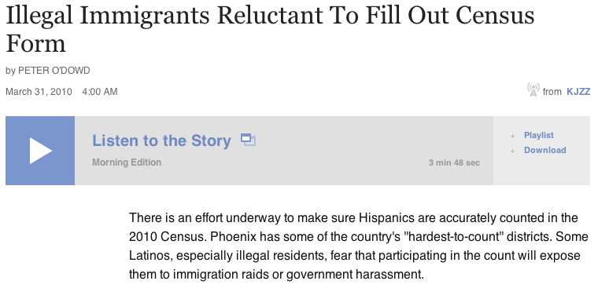
Sampling is natural.
Think about sampling something you are cooking - you taste (examine) a small part of what you’re cooking to get an idea about the dish as a whole.
When you taste a spoonful of soup and decide the spoonful you tasted isn’t salty enough, that’s exploratory analysis.
If you generalize and conclude that your entire soup needs salt, that’s an inference.
For your inference to be valid, the spoonful you tasted (the sample) needs to be representative of the entire pot (the population).
Non-response: If only a small fraction of the randomly sampled people choose to respond to a survey, the sample may no longer be representative of the population.
Voluntary response: Occurs when the sample consists of people who volunteer to respond because they have strong opinions on the issue. Such a sample will also not be representative of the population.
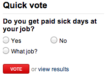
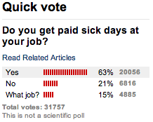
Convenience sample: Individuals who are easily accessible are more likely to be included in the sample.
A historical example of a biased sample yielding misleading results:
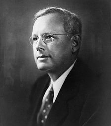
In 1936, Landon sought the Republican presidential nomination opposing the re-election of FDR.
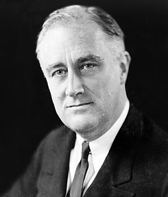
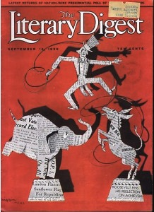
The magazine had surveyed
These groups had incomes well above the national average of the day (remember, this is Great Depression era) which resulted in lists of voters far more likely to support Republicans than a truly typical voter of the time, i.e. the sample was not representative of the American population at the time.
A school district is considering whether it will no longer allow high school students to park at school after two recent accidents where students were severely injured. As a first step, they survey parents by mail, asking them whether or not the parents would object to this policy change. Of 6,000 surveys that go out, 1,200 are returned. Of these 1,200 surveys that were completed, 960 agreed with the policy change and 240 disagreed. Which of the following statements are true?
[Participate ⟹ strawpoll.live and use the code 833295]
Randomly select cases from the population, where there is no implied connection between the points that are selected.
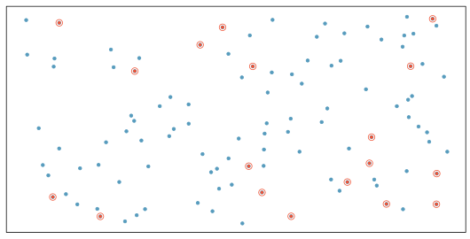
Strata are made up of similar observations. We take a simple random sample from each stratum.
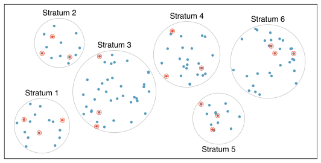
Clusters are usually not made up of homogeneous observations. We take a simple random sample of clusters, and then sample all observations in that cluster. Usually preferred for economical reasons.
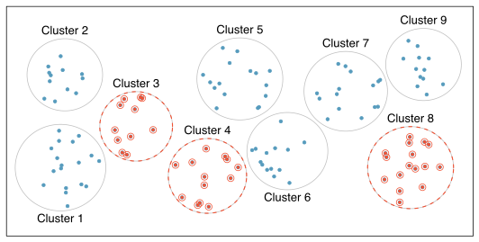
Clusters are usually not made up of homogeneous observations. We take a simple random sample of clusters, and then take a simple random sample of observations from the sampled clusters.
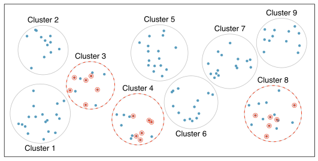
A city council has requested a household survey be conducted in a suburban area of their city. The area is broken into many distinct and unique neighborhoods, some including large homes, some with only apartments. Which approach would likely be the least effective?
[Participate ⟹ strawpoll.live and use the code 833295]
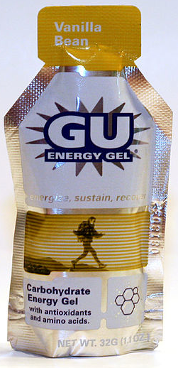
We would like to design an experiment to investigate if energy gels makes you run faster:
It is suspected that energy gels might affect pro and amateur athletes differently, therefore we block for pro status:
A study is designed to test the effect of light level and noise level on exam performance of students. The researcher also believes that light and noise levels might have different effects on males and females, so wants to make sure both genders are equally represented in each group. Which of the below is correct?
[Participate ⟹ strawpoll.live and use the code 833295]
What is the main difference between observational studies and experiments?
[Participate ⟹ strawpoll.live and use the code 833295]
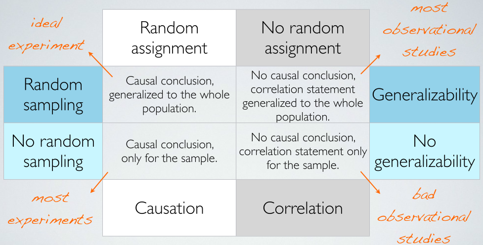
DSK803 · Chapter 1: Introduction to data